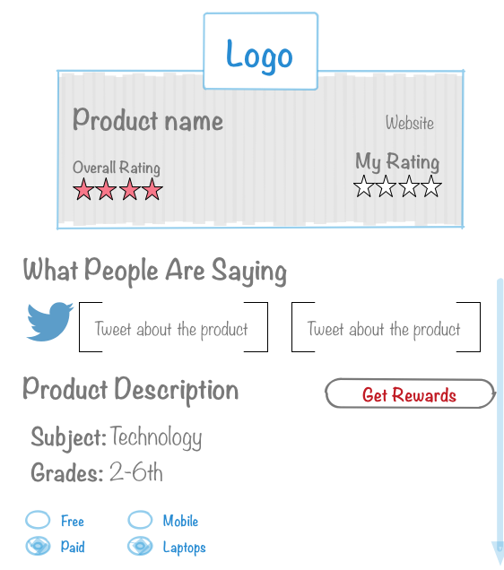
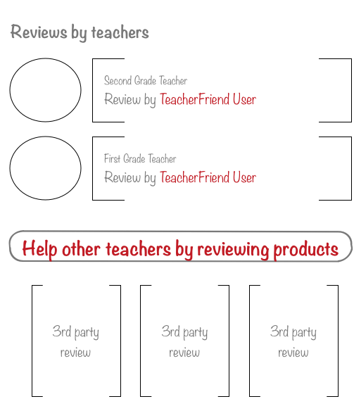

IXL


Links and Information
Content of page 2
Show page 1
IXL Learning by IXL Learning
GRADES / Pre-K, Elementary (Grades K-4), Middle School (Grades 5-8), High School (Grades 9-12)
PRICING PLANS / Freemium
PLATFORMS / Browser-based, Flash, Mac, Mobile Learning, Windows
http://www.ixl.com/
Math practice website for elementary, high school students through algebra and geometry
Overview
IXL Learning is a math practice Web site tailored for state and now Common Core standards. Like most math practice tools and games, it also generates progress reports on student proficiency for parents and teachers. As of Fall of 2013, IXL launched language arts content for grades 2-5, as well as an iPhone app for their math content.
Covering 2,000 skills across early math through algebra, IXL allows students to choose skills to practice (with the program adjusting its level of difficulty according to the student’s performance). It also has a different themed game board for each grade level with “challenges” and virtual prizes that students can earn as they work their way through, though its games are not as richly illustrated or engaging as others on the market. For pre-K, kindergarten and first grade, where students are learning to read, there is an audio feature that reads the prompts to them instead.
As of October 2012, the company reported over 3 million subscribed users.
Some limited site content is available for free, while a student or classroom subscription is required to access progress reports and a deeper library of content. The company charges parents $9.95 per month per student, or $79 per year per student (additional students cost an extra $2/month or $20/year). Pricing for schools is set at $199 per year for a classroom of up to 30 students. The company also offers a free 30-day teacher trial. (Larger licenses can request a quote from the company.)
Tweets
@IXLRecruiting tweeted: IXL was featured as one of four exciting summer learning acitivities for students! https://t.co/aBMBrIGp2a
@IanMooreSr tweeted: RT @edtechking: "Programs like #IXL are huge for the students, for just learning and becoming better on these computers." #edtech
@IXLLearning tweeted: RT @edtechking: "Programs like #IXL are huge for the students, for just learning and becoming better on these computers." #edtech
@edtechking tweeted: "Programs like #IXL are huge for the students, for just learning and becoming better on these computers." #edtech
Links and Information
IXL Learning by IXL Learning
GRADES / Pre-K, Elementary (Grades K-4), Middle School (Grades 5-8), High School (Grades 9-12)
PRICING PLANS / Freemium
PLATFORMS / Browser-based, Flash, Mac, Mobile Learning, Windows
http://www.ixl.com/
Math practice website for elementary, high school students through algebra and geometry
Overview
IXL Learning is a math practice Web site tailored for state and now Common Core standards. Like most math practice tools and games, it also generates progress reports on student proficiency for parents and teachers. As of Fall of 2013, IXL launched language arts content for grades 2-5, as well as an iPhone app for their math content.
Covering 2,000 skills across early math through algebra, IXL allows students to choose skills to practice (with the program adjusting its level of difficulty according to the student’s performance). It also has a different themed game board for each grade level with “challenges” and virtual prizes that students can earn as they work their way through, though its games are not as richly illustrated or engaging as others on the market. For pre-K, kindergarten and first grade, where students are learning to read, there is an audio feature that reads the prompts to them instead.
As of October 2012, the company reported over 3 million subscribed users.
Some limited site content is available for free, while a student or classroom subscription is required to access progress reports and a deeper library of content. The company charges parents $9.95 per month per student, or $79 per year per student (additional students cost an extra $2/month or $20/year). Pricing for schools is set at $199 per year for a classroom of up to 30 students. The company also offers a free 30-day teacher trial. (Larger licenses can request a quote from the company.)
GRAPHITE EXPERT REVIEW
Jason Shiroff
Common Sense Graphite Reviewer
Classroom teacher
GRAPHITE RATING
LEARNING SCORES
ENGAGEMENTIs the product stimulating, entertaining, and engrossing? Will kids want to return?
When it comes to drill and practice, you can only make it so much fun. However, IXL makes a good effort through rewards, immediate feedback, and visually appealing tasks.
PEDAGOGYIs learning content seamlessly baked-in, and do kids build conceptual understanding? Is the product adaptable and empowering? Will skills transfer?
Practice, practice, practice builds confidence and accuracy, though repetition won't encourage critical thinking.
SUPPORTDoes the product take into account learners of varying abilities, skill levels, and learning styles? Does it address both struggling and advanced students?
Students get detailed support and tips when they get a problem wrong. The pre-K through fifth-grade content has microphone icons that read a problem out loud. Curriculum is aligned to Common Core, the NGSS, and other state standards.
Links and Information
IXL Learning by IXL Learning
Learn Trial Grade: A-
Parents need to know that IXL is a comprehensive tool that provides math and language arts practice. Everyone can try the skill exercises for free, but they'll be limited to a small number of problems a day. You must be a member to get unlimited practice, tracking, awards, and certificates. Membership fees are $9.95/month or $79.95/year. Kids will need some guidance as to which math skills they should try. Parents can start with their kid's grade level, then use the reports tool to help identify which concepts to focus on. Pre-K and young kids will likely need support and verbal directions from a parent or teacher. Parents should note that an internet connection is required when using the app, and, to gain full access, an account must be created using an email address, a username, and a password. One account provides web and app access. The Android and Kindle versions only include the math curriculum.